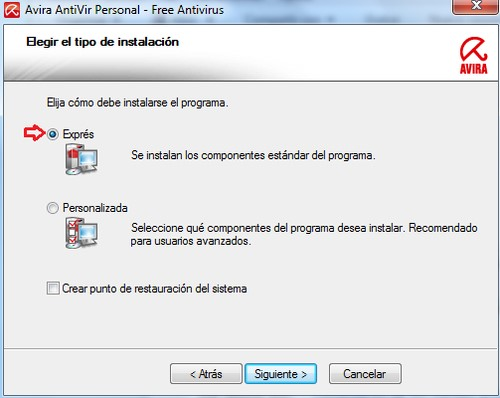
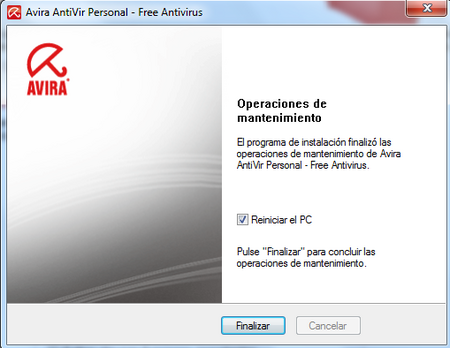

Instalación y desinstalación
Instalación
Avira AntiVir Personal es uno de los mejores antivirus gratuitos que protege tu PC de virus, gusanos, troyanos y otras amenazas de Internet.
Nota: si usas Windows 7, antes de proceder con la instalación desactiva Windows Defender.
Para la instalación de Avira AntiVir, sigue estos pasos:
• Descarga Avira AntiVir Personal y guárdalo en una carpeta (por ejemplo: Avira AntiVir Personal)
• Una vez terminada la descarga, abre la carpeta donde lo guardaste y dale doble clic
• En la ventana que se abre, haz clic en "Ejecutar"
• Aparece la ventana del asistente de instalación, haz clic en "Siguiente"
• Luego marca la casilla aceptando los términos del contrato de licencia, y haz clic en "Siguiente"
• En seguida, confirma que usaras el antivirus para uso personal y haz clic en "Siguiente"
• Elige el tipo de instalación "Exprés" y haz clic en "Siguiente"

• La ventana de registro es opcional, si no deseas registrarte desmarca la casilla "Sí, quiero registrarme..." y haz clic en "Siguiente"
• Empezará la instalación del programa. Espera que termine y haz clic en "Finalizar"
• Avira descargará las actualizaciones, espera mientras tanto
• Una vez terminada la actualización, abre la bandeja del sistema (al lado del reloj) en la barra de tareas. Seguidamente, haz clic derecho sobre el icono de Avira y selecciona "Iniciar AntiVir"
• Aparece la interfaz de AntiVir
Desinstalación
Lo puedes desinstalar como cualquier otro programa desde el Panel de control de Windows o con una herramienta como Revo Uninstaller. Sigue estos pasos:
• Anda a "Inicio > Panel de control > Programas y características"
• En la ventana que se abre, ubica y haz clic derecho sobre la entrada "Avira AntiVir Personal" y selecciona "Desinstalar"
• Confirma tu intención de desinstalar Avira en el mensaje que aparece, haciendo clic en "Sí"
• Espera mientras se lleva a cabo la desinstalación
• Finalmente haz clic en "Finalizar". El equipo reiniciará y Avira habrá sido desinstalado
